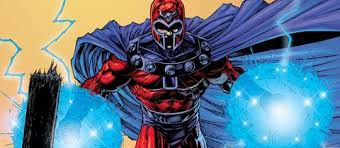
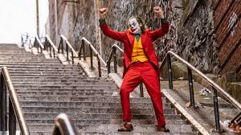

Magneto
Nació en una familia judía en Danzig (ahora Polonia) en el año 1928. Durante los '40, un joven Max Eisenhardt y su familia son perseguidos por los nazis durante el Holocausto. Su familia es exterminada, sin embargo Magneto logra sobrevivir gracias a la intervención de Wolverine, ya que era un soldado americano el cual salva a Magneto de los nazis. Finalmente Magneto es capturado y enviado a Auschwitz, donde es forzado a trabajar en el Sonderkommando.
En Auschwitz, el joven Max Eisenhardt conoce y se enamora de una gitana llamada Magda. Juntos sobreviven al Holocausto y escapan del campo donde fueron prisioneros para marcharse a vivir a la Unión Soviética. Se casan y tienen una hija, llamada Anya. Más tarde Anya fallece en un incendio, del cual Max no es capaz de salvarla por su inexperiencia y la interrupción de una hostil multitud de gente, esos hechos desencadenaron la furia de Eisenhardt. Se manifestaron sus poderes de forma incontrolable, de modo que asesinó a toda aquella multitud y a los ciudadanos circundantes. Atemorizada, Magda huye de Max, descubriendo meses más tarde que estaba nuevamente embarazada. Después llegaría a la montaña Wundagore para dar a luz a los gemelos mutantes Pietro (Quicksilver) y Wanda (Bruja Escarlata) Maximoff, para supuestamente fallecer tras el parto. Los niños son cuidados por Bova, una vaca super evolucionada debido a la experimentación del Alto Evolucionador, quien más tarde los entrega al líder gitano Django Maximoff.
Lex Luthor
Hombre Kriptonita
Mientras que el Luthor de la Edad de Oro (más tarde llamado Alexei Luthor) es simplemente un hombre amoral y brillante impulsado por un simple deseo de poder, a la encarnación de la Edad de Plata se le dio una personalidad y una historia de fondo más desarrolladas. El adolescente Lex Luthor es un aspirante a científico que reside en Smallville y admira mucho a su héroe local Superboy (Kal-El). Después de que Lex lo salva de la kryptonita, el Niño de Acero le construye un laboratorio privado en agradecimiento. Después de "miles de experimentos", el joven científico crea una forma de vida artificial de "protoplasma primitivo". Lleno de alegría, accidentalmente provoca un incendio químico en el laboratorio. Superboy apaga el fuego, derramando inadvertidamente otros químicos, destruyendo la forma de vida artificial y las notas de investigación acumuladas que llevaron a su creación. Los vapores químicos también hacen que el cabello de Lex se caiga por completo. Enfurecido por haber perdido años de investigación pero no dispuesto a aceptar la responsabilidad del incendio, Luthor concluye que Superboy saboteó intencionalmente su trabajo, celoso de los logros del joven científico y jura venganza.
Luthor crea grandiosos proyectos de ingeniería para demostrar su superioridad sobre el superhéroe, pero cada uno falla y causa problemas que Superboy luego resuelve. Luthor luego hace su primer intento de asesinar al Último Hijo de Krypton y falla. En lugar de llevarlo a las autoridades, Superboy declara que están incluso ahora y expresa su esperanza de que Lex se "arregle" y use su inteligencia para ayudar a la humanidad en lugar de intentar demostrar su superioridad o perder el tiempo buscando poder y venganza.
Venom
El traje negro
Venom es un personaje ficticio que aparece en los cómics estadounidenses publicados por Marvel Comics, comúnmente en asociación con Spider-Man. El personaje es un extraterrestre sensible simbionte con una forma amorfa, semi-líquido, que sobrevive mediante la unión con un huésped, por lo general humano. Esta forma de vida dual recibe poderes mejorados y generalmente se refiere a sí misma como «Venom». El Simbionte se introdujo originalmente como un traje alienígena viviente en The Amazing Spider-Man # 252 (mayo de 1984), con una primera aparición completa como Venom en The Amazing Spider-Man # 300 (mayo de 1988).
primer anfitrión humano del simbionte Venom fue Spider-Man, quien finalmente descubrió su verdadera naturaleza nefasta y se separó de la criatura en The Amazing Spider-Man # 258 (noviembre de 1984) con un breve reencuentro cinco meses después en Web of Spider-Man # 1. El simbionte se fusionó con otros anfitriones, sobre todo Eddie Brock, su segundo y más infame anfitrión, con quien se convirtió en Venom y uno de los archienemigos de Spider-Man.
Darkseid

Darkseid es el gobernante tiránico del planeta Apokolips, cargo que obtuvo después de asesinar a su madre. Su obsesión es encontrar la Ecuación de la Anti-vida y usarla para gobernar el universo; esta meta también incluye conquistar su planeta rival, Nuevo Génesis, gobernado por el Alto Padre. Una guerra destructiva entre los dos mundos sólo se detuvo con un intercambio diplomático de los hijos de el Alto Padre y Darkseid.
Orión, el segundo hijo de Darkseid nacido de su esposa Tigra fue dejado al Alto Padre, mientras Darkseid recibió a Scott Free, quien después se convirtió en el mejor artista del escapismo Mr. Miracle. Esto resultó ser un fracaso para Darkseid, con su hijo biológico que creció valorando y defendiendo los ideales de Nuevo Génesis contra su padre, mientras que Scott Free ni bien creció escapó de Apokolips. El primogénito de Darkseid fue Kalibak el Destructor, que fue para él una decepción, y su tercer hijo fue Grayven.
Ultrón
Aunque Ultron aparece por primera vez en Avengers # 54 (1968), el personaje está disfrazado en la mayoría de los casos como Capucha Carmesí, con su rostro solo revelado en la última página del tema y no se le ha dado ningún nombre. El personaje dirige a los Maestros del Mal contra los Vengadores, habiendo hipnotizado a Edwin Jarvis para que trabaje para él. En la siguiente edición de Avengers # 55 (agosto de 1968), el personaje se identifica como Ultron-5, el Automatismo Viviente. En Avengers # 57–58 (octubre-noviembre de 1968), una secuencia de flashback reveló que Ultron creó al "synthezoide", Visión como arma para destruir a los Vengadores. La Visión, que tiene los patrones cerebrales de Hombre Maravilla, destruye a Ultron con la ayuda de los Vengadores.
Otros flashbacks revelan que Ultron es la creación de Hank Pym y se basa en los patrones cerebrales de Pym. El robot desarrolló gradualmente su propia inteligencia y se rebeló, y casi de inmediato desarrolla un complejo de Edipo, por lo que siente un odio irracional hacia Hank y demuestra un interés en la Avispa (Janet van Dyne). Reconstruyéndose, aprendiendo a encenderse y actualizándose cinco veces, Ultron luego hipnotiza y le lava el cerebro a su "padre" para que olvide que el robot alguna vez existió.
Joker
El Guasón
De forma similar a su creación, la biografía de Joker carece de una versión definitiva sobre sus orígenes y el personaje ha pasado por varios cambios desde su primera aparición en los años 1940. De acuerdo con la narración sospechosa del propio personaje: «A veces lo recuerdo de una manera y otras veces de manera diferente [...] Si voy a tener un pasado ¡Que sea de opción múltiple!» Sus explicaciones van desde el abuso infantil por parte de su padre, hasta la encarnación de un bufón que sirvió a un faraón.
En Detective Comics n° 168 (1951) se revela que en un pasado asumió la identidad del criminal Red Hood para robar una fábrica. Sin embargo, Batman frustra sus planes cuando aparece en el lugar y lo persigue hasta que el delincuente se introduce en un recipiente de sustancias corrosivas que le desfiguran el rostro y le tiñen de verde y blanco el cabello y la piel, respectivamente. Alternativamente en The Killing Joke se le describe como un asistente de una planta química que renuncia a su empleo para perseguir su sueño de convertirse en un afamado comediante. No obstante, su fracaso en esta ocupación pone en riesgo su estabilidad económica, de la cual depende también su esposa Jeannie, que en ese instante se encuentra embarazada. En un acto desesperado, acepta ayudar a un par de criminales a infiltrarse en el interior de la fábrica donde trabajaba, solo para descubrir luego que su cónyuge e hijo murieron durante un accidente doméstico. Aunque intenta retractarse del atraco, al final es forzado por los delincuentes a cumplir con su palabra. En lo sucesivo, la historia acontece de forma similar a la anterior publicación: Batman aparece y el hombre atemorizado se lanza a una tina de químicos que le confieren los rasgos físicos característicos de Joker. De hecho, las ediciones de Batman: Gotham Knights n° 50-55 sostienen que Edward Nygma atestiguó el secuestro y asesinato de la esposa de Joker con tal de obligarlo a cooperar con el robo del corporativo químico. Esta versión es secundada en otras publicaciones como El hombre que ríe —en donde Batman sospecha que Red Hood sobrevivió a la caída y se convirtió en Joker— y Batman n° 450 —Joker asume la identidad de Red Hood para recuperarse de los acontecimientos de «Una muerte en la familia», sin embargo su experiencia resulta traumática— y Death of the Family—.